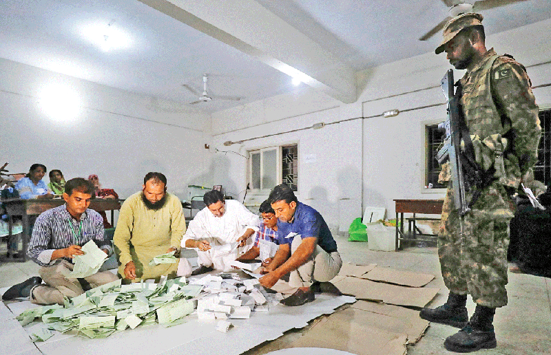

July 26, 2018
Controversial ballot count follows a day of calm voting in Karachi
With Tariq Ahmed Saeedi
© Reuters
As Wednesday ended with peaceful voting across Karachi, claims by different political parties raised questions about transparency in the process of counting ballot papers at different polling stations of the city.
For more or less three decades the Muttahida Qaumi Movement (MQM) has dominated the electoral scene in Karachi. But the divisions within the party, new political players entering the fray and relatively new contestants gathering momentum turned the 2018 general election on its head, at least in the metropolis.
Where the 2013 polls were fraught with lawlessness, violence and terror, with many people returning home without casting their ballots, this time round the elections painted an overall picture of calm. Perhaps too much calm, as the voter turnout was lower than it was five years ago.
Despite the prospect of a low voter turnout in the previous polls due to terrorism threats and weak election campaigns, the number of people who cast their ballots almost doubled from that of the 2008 election.
But the boisterous electioneering for Wednesday’s polls and constant reminders of exercising one’s right to vote could still not encourage more people to cast their ballots, possibly because of the violent attacks on political rallies in the weeks leading up to the elections creating a general sense of fear.
Controversy
The MQM-Pakistan and the Pak Sarzameen Party (PSP) protested against the expulsion of political agents from the polling stations in Karachi, Geo News reported.
MQM-P leader Faisal Subzwari alleged on Wednesday night that the party’s polling agents had been thrown out during the vote count from polling stations and officials of the Election Commission of Pakistan had refused to hand over the final results to the party representatives, Geo News reported.
Speaking at a press conference, he said: “We reserve the right to protest if we are not handed over the final results of the polling stations from the election commission staffers.“
Subzwari alleged that the MQM-P’s representatives were thrown out from NA-249’s Salahuddin School polling station 89, and from a polling station in Gulzar-e-Hijri, Metroville. “Our voters came out today even after facing pre-poll rigging in the face of delimitation.”
The MQM-P leader raised questions over the competence of the ECP in holding transparent and non-controversial polls.
He said that at the eleventh hour, constituencies were changed of a number of voters living in District Central of the metropolis and were shifted to other districts.
The Pak Sarzameen Party also complained about the same thing. Speaking to journalists, PSP leader Raza Haroon said that political agents were not being given attested copies of the results at political stations. “Whatever is happening has never happened before.”
Haroon shared that the political agents expelled from polling stations were told to get the results from the returning officers. He said the results o a plain piece of paper meant nothing.
Lack of enthusiasm
Even though the city’s law and order situation was ideal and the weather quite pleasant, the people’s lack of enthusiasm for the electoral exercise was apparent.
The election camps of the MQM, which won 17 National Assembly seats in the previous polls, were unusually deserted. One of the camps near Rashid Minhas Road had three elderly men facing a single empty bench.
Five years ago this roadside leading to two polling stations was thronged with people in long queues, with zealous political workers guiding voters about the election process.
Youth’s motivations
For social media-driven Ahmed, Osama and their friend, aged between late 20s and early 30s, the motivation behind casting their ballots was free espresso and off-price scrumptious deals at a variety of coffee shops and bistros offering heavy discounts for voters.
This was perhaps the first election in which people’s mobile phones were bombarded with unsolicited promotional offers to motivate them to go out and vote. But there are others who voted for a different reason, such as the two youngsters who cast their ballots in favour of a family friend.
Hope springs eternal
Appreciating how things looked organised this election, an elderly woman said: “We have already tried two [major political parties], so this time Imran [Khan of the PTI] is our choice.”
Saeed Rajput, 76, also has similar views. He said the youth should decide the country’s fate, adding that they can help Khan win. “We should vote for those whom we can have access to after the elections.”
Sarfaraz Khan, 58, said that nobody has done anything for the people for the past many years. “I would have voted for Siraj [ul Haq of the Jamaat-e-Islami] if I could,” said Khan, who hails from Dir but has been living in Karachi for the past four decades.
He admires the JI chief for living a life of simplicity. Although Khan visits his hometown once or twice a year, he could not leave for Dir to vote because of his livelihood.
However, middle-aged Bubbly summed up how to pick a candidate in whose favour you cast your ballot. “You should vote for only that person who cares about Karachi.”
Overloaded ECP
The Election Commission of Pakistan (ECP) had launched an SMS service for voters to retrieve updated information regarding the polling exercise, but the service went haywire within an hour of voting. While the ECP had advertised the service ahead of the elections, most of the voters were unaware of it.
A presiding officer said the polling staff needs a long time to manually reconcile a voter’s record if they do not retrieve the serial code from the ECP to reach their polling booth. Those who are not tech-savvy, especially the elderly, found themselves in a bind.
Law and order
In comparison to 2013, no untoward incident was witnessed on Wednesday, as claimed by District South SSP Omar Shahid Hamid, while the overall law and order situation in the metropolis remained peaceful during the polling process.
Five years ago bomb blasts outside the Awami National Party’s (ANP) Landhi office had killed 10 people and wounded more than 30 others.
The attack was meant to target ANP candidate Amanullah Mehsud, who survived the attempt unscathed.
Another blast in 2013 had targeted a bus carrying ANP supporters in Qasba Colony, leaving two people and injuring several others, while reports regarding incidents of firing were received from various parts of the city.
On Wednesday, however, independent candidate Jibran Nasir claimed that five of his election camps were torn down by Tehreek-e-Labbaik Pakistan supporters in Delhi Colony, Chandio village, some phases of Defence and Hijrat Colony.
SSP Shahid said Nasir’s allegations were investigated, but the police ascertained that no such incident had occurred. “The police are present for the security of all citizens, and it is requested that candidates refrain from making false claims.”
The electoral process was stopped for a short while in the PS-108 constituency in Lyari’s Bihar Colony, as a suspicious man tried to forcefully enter the polling station. According to SP Iftikhar Lodhi, the suspect was intoxicated and claimed to be a police officer. He was taken to the Chakiwara police station.
At a polling station in the NA-246 constituency in Lyari, impatient voters standing in a queue broke out into a fight. Police officials, however, reached the site to defuse the situation.
Seven people, including a woman, were detained in Korangi on the complaint of a presiding officer, who said they were in possession of some “fake” documents.
“The persons being questioned are polling agents of three different political parties, whose candidates were contesting for NA-239,” said East Zone DIG Amir Farooqui, adding that they were not formally arrested.
First published in The News International